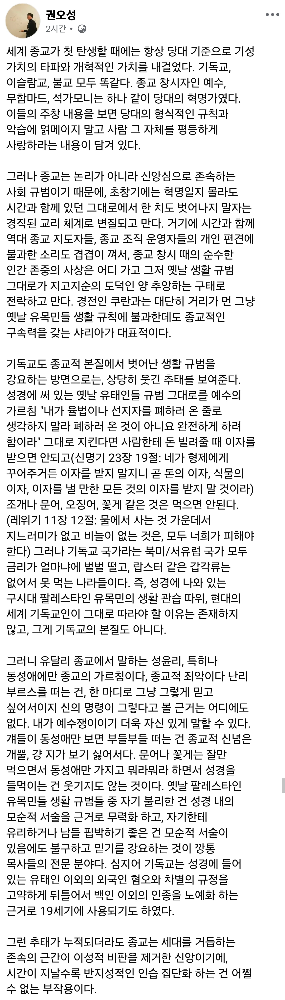

수면간
음주순애야
본문에서도 이미 말했듯 뭐가 됐든 종교적 믿음으로서 존속되는 한 피할 수 없는 문제긴 함
그렇게 경전의 내용을 그저 텍스트로서 비판적 통합적으로 읽어낼 수 있는 사람들은 저렇게 몰상식한 종교인이 될 수가 없음
의지의 문제가 아니라 가능 불가능의 문제임
구약에서 먹지 말라고 한게 너무 많아서 신약 가서는
응~ 다 무효~ 하나님이 내꿈에 나와서 먹어도 된다고 했음 ~
으로 일축해버림 ㅋㅋㅋ
종교 따위가 국가가 법으로 보장한 자유를 침해하려고 들면
그때부터 좆슬람 취급당하는거야
마찬가지로 불교에서도 고기를 먹지 말라는 계율은 없었고, 다만 삼정육(불견, 불이, 불의)을 먹으라고 말했을 뿐인데, 중국 양무제 시기때 난데없이 비건종교가 되어버림
빤냔냐!
애초 성경에는 돼지고기,해산물 금지령부터 술취하지 말라느니 여자들은 남편한테 헌신하라는 소리도 적혀있는데
왜 음식이나 술이나 페미들은 모르쇠해도 동성애 하나만 집어서 성경팔이 하면서 정죄하는지 이해가 안감
논란되는 건 다 구약이라 지들 논리대로면 예수십자가로 옛율법들 다 사라짐
근데 여자들 교회에서 조용하라 이런건 신약에 나오는거임
신약도 21세기 기준 논란될 율법 많은데 다른건 다 냅둬도 오로지 성 관련만 억죄는건지 모르겠음.
거기다 성경엔 써있지도 않은 포르노,트랜스젠더도 불경하다고 기독교단체가 유독 나서서 반대하는거 보면
그냥 한국 특유의 유교식 보수주의가 예수팔이로 변질된거 같기도
+미국 개신교 영향
포르노같은건 근거가 있긴함
이웃집 여자보고 음란한 마음 품지마란 말 있는데, 이걸토대로 아내말고 다른 여자보고 성적흥분하지 말라고 볼수도 있지
것보다 궁금한건 그럼 왜 하나님은 이성이 되고싶은 정신을 가진 사람을 만들었냐는거임
하나님이 다 한거면, 저런 사람들이 고뇌할걸 알면서 왜 만듦?
동물박이 시체박이 소아박이들은 왜 만듦?
그리 따지면 남자는 길가는 섹시한 여자든 연예인 보고도 흥분할수 있는건데, 그 율법 다 지키려면 아프간 같이 여자들 부르카 씌우는게 맞겠지
근데 교회에서 그렇게까진 주장안하잖아
지들맘대로 이건 지키고 이건 안지키고, 뷔페니즘처럼
여성,페미라던지 금주 밀어붙이고 그러는건 반대할 적수가 많을테니 건들수없는 부분이고, LGBT는 한국에선 아직 작은 세력이니 공격하기가 훨씬 쉬우니 그런거기는 하지. 그래서 더 역겨운거고.
애초 동물들도 일정비율 동성애 하는거만 봐도 동성 좋아하는건 인간의 의도적인 죄라기보다 신이 창조했다는 자연법칙의 일부분인게 맞는데 말이지
남이사 성인둘이 합의하에 섹스한다는데 마약이나 살인같은 범법도 아닌데 지랄할필요 없다 생각함 반대로 동성애자들 헐벗고 축제랍시고 공공장소에서 남근빵이니 외설적 행위하는것도 ㅈ같음 걍 똑같이 결혼하던 혼인신고하던 알하노하고 지내실수있해주고 그양반들도 굳이 싫다는사람들 앞에서 개지랄좀 안했음 좋겠음
무함마드, 예수, 석가모니, 다 글에 나온대로 그 당시에는 혁명가들이었음. 예로 무함마드 삼서사첩도 당시 막무가내 첩실 제도를 다듬고 오히려 아내들의 권리를 보장해주는 혁신이었음.
성인들이 지금 시대에 태어났으면 현대 종교인들 뚝배기 깼을 거임
그래서 여자가 기독교나 이슬람교 믿는게 잘 이해가 안됨
불교는 비구니계라도 받는데 천주교만 해도 여자는 성직자가 못되잖아?
성차별을 받아들인다고 봐야하나
성경 안읽고 믿는거겠지 뭐
목사가 여자는 교회에서 목소리높이지마세요 이런말 안할테니까
잘 몰라서 그러는데 비구니 스님들이 일반 남성 스님들 같은 활동이 가능함? 뭐 절의 주지나 총무스님을 한다던가 조계종 간부직에 올라간다던가. 아니라면 수녀랑 다를 바 없지 않나여?
비구니는 구족계를 받고 스스로 불교 승려로서 의례 집전과 설법이 모두 가능함
수녀는 그냥 여성 수행자일 뿐 신부처럼 의례 집전의 주체가 될 수 없음
승가와 천주교 사제를 1:1로 대응하긴 뭣하지만 차이 큼
ㅇㅎ 몰랐네
수녀는 미사를 못함
미사(=제사, 예불) 집전은 남성 신부만 가능해
ㅇㅇ 그건 알고 있었는데 불교계에 대해서는 뭐 거의 몰라서 ㅋㅋㅋ
찾아봤더니 보문사 보문종은 구성원이 전부 여자네 ..
성경핑계대고 본인의 혐오를 정당화하지 말라는 말이지. 그렇게 철저히 지키려거든 하나도 빠짐없이 지키던가 체리피킹하지말고.
종교의 주기능은
저점보장이고
이념과 제도와 사업의 모태이기도 해서..
쩔 수 없긴해
그때는 혁신이었으나 지금은 아닌
그래서
기술의 구원이 종교에 있기도 하고
종교의 구원이 기술에 있기도 하고
종교는 통치 수단일 뿐이니까
자기들 성경대로 사는것도 못하는 새끼들이 성경에 맞지 않다고 대중문화니 동성애니 공격하기에만 매달리는게 참 역함. 이미 외부 공격 아니면 존속이 안되는 수준이라 그런지는 몰라도
성경엔 아빠 강간한 자매도 있는데